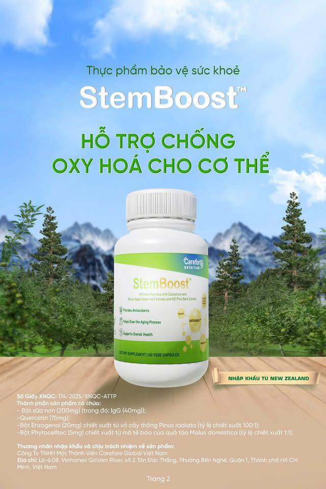
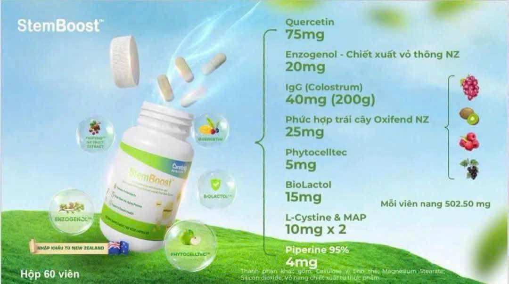

Stemboost – Thực phẩm bổ sung tế bào gốc giúp trẻ hóa làn da từ bên trong
Trong thế giới hiện đại, chăm sóc da không chỉ dừng lại ở các sản phẩm bôi ngoài mà cần được nuôi dưỡng từ bên trong. Stemboost thực phẩm bổ sung tế bào gốc là lựa chọn hàng đầu cho những ai mong muốn trẻ hóa làn da toàn diện, cải thiện các dấu hiệu lão hóa và tăng sức đề kháng tự nhiên của da.
Giới thiệu về Stemboost thực phẩm bổ sung tế bào gốc
Stemboost là sản phẩm tiên phong ứng dụng công nghệ tế bào gốc hiện đại vào lĩnh vực chăm sóc da. Viên uống này giúp kích thích quá trình tái tạo tế bào, làm mờ nếp nhăn, phục hồi các vùng da hư tổn và nuôi dưỡng da từ sâu bên trong.
Đặc biệt, viên uống tế bào gốc trẻ hoá da như Stemboost đang trở thành xu hướng làm đẹp được phụ nữ châu Á tin dùng.
Lợi ích nổi bật của Stemboost thực phẩm bổ sung tế bào gốc
1. Tái tạo làn da – Chống lão hóa toàn diện
Stemboost giúp thúc đẩy sản sinh tế bào da mới, tăng sinh collagen và elastin – hai yếu tố then chốt giữ cho làn da luôn căng mịn, đàn hồi và tươi trẻ. Nhờ vậy, các dấu hiệu lão hóa như nếp nhăn, vết chân chim hay da chảy xệ đều được cải thiện rõ rệt.
2. Phục hồi da tổn thương do môi trường
Mỗi ngày làn da phải đối mặt với ô nhiễm, ánh nắng và căng thẳng. Viên uống tế bào gốc trẻ hoá da Stemboost giúp tăng khả năng tự phục hồi và tái tạo của da, bảo vệ khỏi các tác nhân gây hại và giảm thiểu tình trạng sạm, nám, khô ráp.
3. Nuôi dưỡng da từ bên trong
Không giống các sản phẩm bôi ngoài chỉ tác động bề mặt, Stemboost thực phẩm bổ sung tế bào gốc hấp thụ trực tiếp vào cơ thể, cung cấp dưỡng chất cần thiết để nuôi dưỡng da khỏe mạnh từ lớp hạ bì.
4. Cải thiện tông da – Làm sáng và đều màu
Nhờ khả năng kích thích tái tạo tế bào mới, Stemboost giúp làn da trở nên sáng hơn, đều màu hơn và giảm tình trạng thâm sạm.
Thành phần chính trong Stemboost
- Chiết xuất tế bào gốc thực vật
- Collagen thủy phân dễ hấp thu
- Vitamin C, E – Chống oxy hóa mạnh
- Coenzyme Q10 – Bảo vệ tế bào da
- Chiết xuất hạt nho – Tăng cường độ ẩm và đàn hồi
Đối tượng phù hợp sử dụng Stemboost
Phụ nữ từ 25 tuổi trở lên
Đây là thời điểm cơ thể bắt đầu suy giảm khả năng sản xuất collagen và tái tạo tế bào. Viên uống tế bào gốc trẻ hoá da Stemboost giúp bù đắp sự thiếu hụt này một cách tự nhiên và an toàn.
Phụ nữ sau sinh hoặc da nhạy cảm, dễ lão hóa
Những người có làn da yếu, nhăn nheo hoặc bị ảnh hưởng bởi nội tiết tố sau sinh sẽ nhận thấy cải thiện rõ rệt sau khi dùng Stemboost đều đặn.
Cách sử dụng Stemboost hiệu quả
- Liều dùng khuyến nghị: Uống 1–2 viên mỗi ngày sau bữa ăn sáng.
- Liệu trình tối thiểu: 3 tháng để đạt hiệu quả tối ưu.
- Kết hợp chăm sóc ngoài da: Sử dụng kem chống nắng, dưỡng ẩm và ngủ đủ giấc.
Mẹo tăng hiệu quả khi sử dụng Stemboost
- Uống đủ 2 lít nước/ngày giúp cơ thể hấp thu dưỡng chất tốt hơn.
- Bổ sung thực phẩm giàu vitamin C và rau xanh để hỗ trợ sản sinh collagen.
- Tránh thức khuya và giảm căng thẳng để làn da phục hồi hiệu quả hơn.
So sánh Stemboost với các sản phẩm khác
So với nhiều loại viên uống tế bào gốc trẻ hoá da khác, Stemboost nổi bật nhờ:
- Công nghệ tế bào gốc tiên tiến
- Thành phần tự nhiên, không gây kích ứng
- Hiệu quả được kiểm nghiệm lâm sàng
Tổng Kết
Stemboost thực phẩm bổ sung tế bào gốc là giải pháp toàn diện giúp làn da trẻ hóa từ bên trong. Với công nghệ tế bào gốc hiện đại, sản phẩm không chỉ giúp chống lão hóa hiệu quả mà còn tăng sức đề kháng cho da, phục hồi tổn thương và mang lại vẻ ngoài tươi tắn, khỏe mạnh.
Hãy để viên uống tế bào gốc trẻ hoá da Stemboost đồng hành cùng bạn trên hành trình gìn giữ thanh xuân và sự tự tin!
>>- Các bài viết liên quan